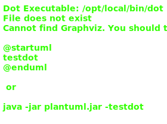

Class BpmnBuilderService
Hierarchy-Diagram
{kind=link}
Legend
 class
class
 private property
private property
 public method
public method
 private method
private method
Hierarchy
- BuilderService<ModdleElement, RecordOfAnyType>
- BpmnBuilderService
Index
Constructors
Properties
Methods
Constructors
constructor
- new
Bpmn Builder Service(moddle: CustomBpmnModdle, baseXML: string, elements: ElementService<ModdleElement>, nodes: NodeService<ModdleElement>, layout: AutoLayoutService, utils: UtilsService): BpmnBuilderService -
Parameters
-
moddle: CustomBpmnModdle
-
baseXML: string
-
elements: ElementService<ModdleElement>
-
nodes: NodeService<ModdleElement>
-
layout: AutoLayoutService
-
utils: UtilsService
Returns BpmnBuilderService
-
Properties
Private base
Private Readonly baseXML
Private Readonly elements
Private Readonly layout
Private Readonly moddle
Private Readonly nodes
Private Optional root
Private Readonly utils
Methods
Private add
- add
Else Into Main Flow(elseStatement: Statement<ModdleElement, RecordOfAnyType>, statement: Statement<ModdleElement, RecordOfAnyType>): void -
Parameters
-
elseStatement: Statement<ModdleElement, RecordOfAnyType>
Statement
- the statement that contains the else flow -
statement: Statement<ModdleElement, RecordOfAnyType>
Statement
- the statement that is being parsed
Returns void
-
build
- build(statement: Statement<ModdleElement, RecordOfAnyType>, elseStatement: Statement<ModdleElement, RecordOfAnyType>): Promise<string>
-
It takes a statement and an else statement, and returns a promise that resolves to a string of XML
Returns
The XML of the process
Parameters
-
statement: Statement<ModdleElement, RecordOfAnyType>
Statement
-
elseStatement: Statement<ModdleElement, RecordOfAnyType>
The else statement that is to be added to the main flow.
Returns Promise<string>
-
Private get
- get
Properties(element: ModdleElement): RecordOfAnyType -
It gets the extension elements of the element, then gets the properties of the extension elements, then sets the state of the property
Returns
An object with the properties of the element.
Parameters
-
element: ModdleElement
ModdleElement - the element that we want to get the properties from
Returns RecordOfAnyType
-
Private get
- get
Start Event(trigger: StatementNode<ModdleElement>): WorkflowElement<ModdleElement> -
It creates a new instance of a StartElement, StartOnIntervalElement, or StartElement depending on the type of trigger
Returns
A start event.
Parameters
-
trigger: StatementNode<ModdleElement>
StatementNode
Returns WorkflowElement<ModdleElement>
-
link
- link
Nodes(element: StatementNode<ModdleElement>): void -
It links the nodes in the diagram.
Parameters
-
element: StatementNode<ModdleElement>
StatementNode
Returns void
-
restore
- restore(xml: string): Promise<{
actions: ActionWithInput<ModdleElement>[];
elseActions: ActionWithInput<ModdleElement>[];
events: EventWithInput<ModdleElement>[];
groups: BaseGroup<ModdleElement>[];
process: ModdleElement;
state: RecordOfAnyType;
}> -
It takes an XML string, converts it to a moddle object, and then returns an object with the actions, events, groups, state, and process
Returns
An object with the following properties: - actions: An array of ActionWithInput objects - elseActions: An array of ActionWithInput objects - events: An array of EventWithInput objects - groups: An array of BaseGroup objects - state: An object with the following properties: - name: A string - description: A string
Parameters
-
xml: string
The XML string that you want to restore.
Returns Promise<{
actions: ActionWithInput<ModdleElement>[];
elseActions: ActionWithInput<ModdleElement>[];
events: EventWithInput<ModdleElement>[];
groups: BaseGroup<ModdleElement>[];
process: ModdleElement;
state: RecordOfAnyType;
}> -
Private save
- save
Properties(state: StateMap<RecordOfAnyType>, node: StatementNode<ModdleElement>): ModdleElement -
It creates a new ProcessPropertiesElement, which is a class that extends the Element class, and passes it the node and state
Returns
A new ProcessPropertiesElement
Parameters
-
state: StateMap<RecordOfAnyType>
The state of the process.
-
node: StatementNode<ModdleElement>
The node that is being processed.
Returns ModdleElement
-
Private set
- set
State(property: ModdleElement, state: RecordOfAnyType): void -
It takes a property and a state object, and it sets the state object's value to the property's value
Parameters
-
property: ModdleElement
ModdleElement - this is the property that is being set
-
state: RecordOfAnyType
The state object that we're going to be updating.
Returns void
-
set
- set
Tags(element: StatementNode<ModdleElement>): void -
It creates a new tag for the element and adds it to the base
Parameters
-
element: StatementNode<ModdleElement>
StatementNode
Returns void
-
traverse
- traverse
To Link(root: StatementNode<ModdleElement>): void -
It traverses the tree and links the nodes.
Parameters
-
root: StatementNode<ModdleElement>
The root node of the tree.
Returns void
-
traverse
- traverse
To Set Tags(root: StatementNode<ModdleElement>): void -
It traverses the tree and sets the tags for each node.
Parameters
-
root: StatementNode<ModdleElement>
The root node of the tree.
Returns void
-
It adds the else statement to the main flow
Returns
The return statement stops the execution of a function and returns a value from that function.